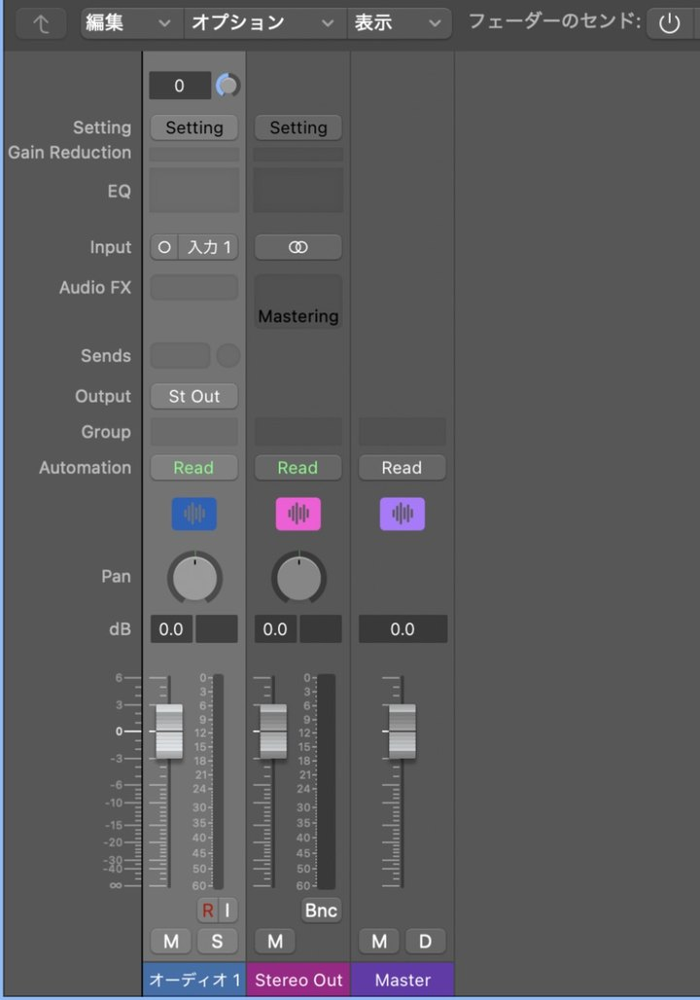
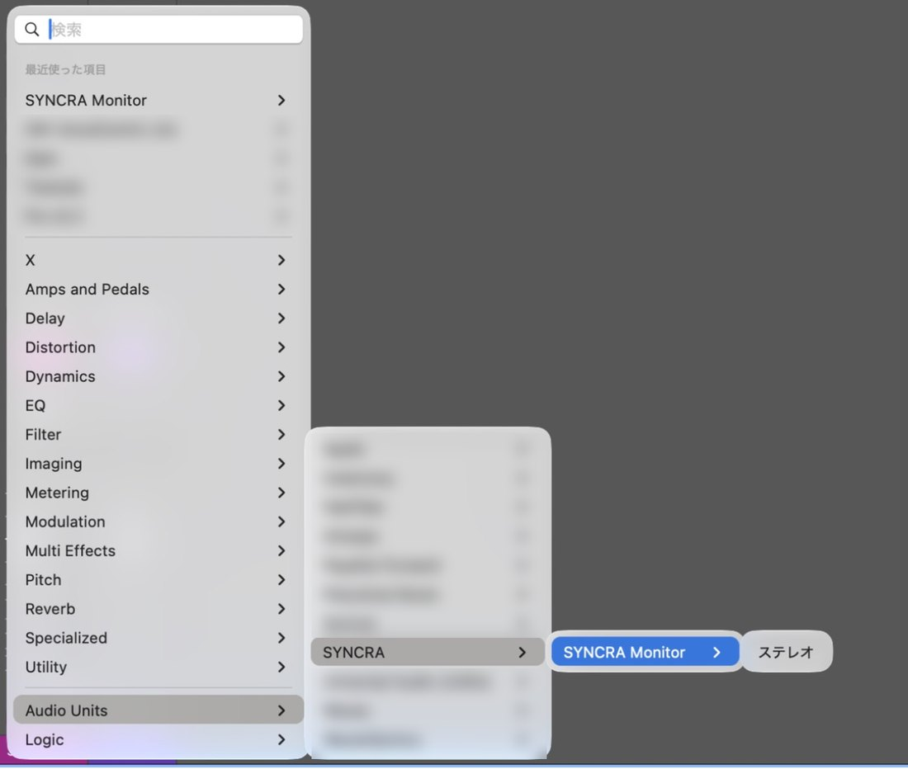
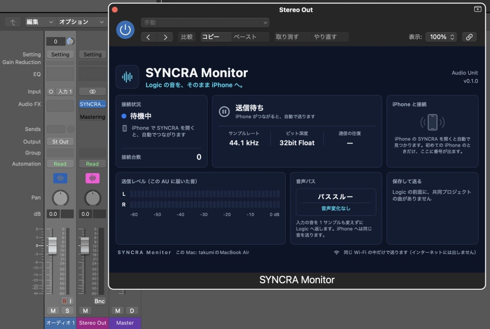

Insertar SYNCRA Monitor en Logic
Cómo insertarlo (3 pasos)
Abre Stereo Out en la consola
En Logic, pulsa X para abrir la consola. (1) Busca el canal «Stereo Out» y (2) el hueco de Audio FX vacío.
- El canal Stereo Out
- El hueco de Audio FX (haz clic aquí)

12Haz clic en el hueco y elige en el menú
Haz clic en el hueco de Audio FX y elige (1) Audio Units → (2) SYNCRA → (3) SYNCRA Monitor → (4) Estéreo. A partir de la segunda vez, SYNCRA Monitor aparece arriba del menú, en «Elementos recientes».
- Audio Units
- SYNCRA
- SYNCRA Monitor
- Estéreo

1234Al insertarlo, se abre la ventana de SYNCRA Monitor
(1) En los Audio FX de Stereo Out aparece «SYNCRA…» y (2) se abre la ventana «SYNCRA Monitor». (3) Cuando aparece «En espera», está listo.
- SYNCRA está insertado en Audio FX
- La ventana de SYNCRA Monitor (Stereo Out)
- «En espera» = listo

123- Inserta SYNCRA Monitor en los Audio FX de la salida Stereo Out de Logic Pro.
- Cuando aparece «En espera», está listo. Abre SYNCRA en el iPhone o el iPad: se conecta solo en la misma red Wi-Fi y el audio de Logic llega en tiempo real (solo la primera vez con cada iPhone aparece aquí un número).
- La ruta de audio es «Paso directo (sin cambios en el sonido)»: la entrada vuelve a Logic sin cambiar ni una muestra, y el mismo audio se envía al iPhone. Se muestran la frecuencia de muestreo y la profundidad de bits (32 bits flotante).
El audio solo se envía dentro de la misma red Wi-Fi, nunca por Internet.
Partes de la pantalla
- Estado de la conexiónEstado (En espera, Conectado…) y cuántos iPhone e iPad están conectados.
- EnvíoIndica si se envía audio al iPhone o iPad (Enviando / En espera). Empieza solo al conectarse.
- Formato de audioFrecuencia de muestreo, profundidad de bits (32 bits flotante) e ida y vuelta de la red.
- Conectar con el iPhoneSolo con un iPhone nuevo aparece aquí y en el iPhone el mismo número de 6 dígitos. Si coincide, pulsa «Coincide».
- Nivel de envíoMedidores izquierdo y derecho del audio que llega a este AU.
- Ruta de audioPaso directo: la entrada vuelve a Logic sin cambiar ni una muestra.
- Guardar y enviarTambién puedes guardar y enviar desde aquí los cambios de la canción del proyecto compartido en primer plano.
- Solo la misma red Wi-FiEl audio solo se envía dentro de la misma red Wi-Fi, nunca por Internet.
Más detalles (guía de la app)
Preparar el Mac
- Deja SYNCRA abierto.
- Inserta el plug-in “SYNCRA Monitor” en el canal Stereo Out de Logic (en la ranura de efectos de audio, elige “SYNCRA” dentro de “Audio Units”).
- Si macOS te pide permiso para “Red local”, concédelo (no se envía nada a internet).
SYNCRA Monitor no modifica el audio en absoluto. Devuelve a Logic el audio de entrada tal cual.
Conectar en el iPhone
- En SYNCRA en el iPhone, abre la pestaña “Monitor”. Encuentra automáticamente los Mac de la misma Wi-Fi y se conecta.
- Solo la primera vez con un Mac, en el iPhone y en la pantalla de SYNCRA Monitor del Mac aparece el mismo número de 6 dígitos. Si coinciden, haz clic en “Coincide” en la pantalla del Mac. Si no coinciden, haz clic en “No coincide”.
- A partir de la segunda vez, se conecta automáticamente sin número.
Qué puedes comprobar en la pantalla del Mac
- “Estado de conexión”: estados como en espera o conectado.
- “Estado de envío”: si se está enviando al iPhone o no.
- “Conexión con iPhone”: el iPhone conectado y el botón “Desconectar”.
- “Nivel de envío”: los medidores izquierdo y derecho del audio recibido.
Para reproducir, detener, mover, repetir en bucle y exportar la forma de onda completa desde el iPhone, SYNCRA debe estar abierto en el Mac y debe estar concedido el permiso de Accesibilidad. Mientras se exporta la forma de onda, Logic pasa a primer plano y se controla. Ten cuidado si estás haciendo otra cosa en el Mac.